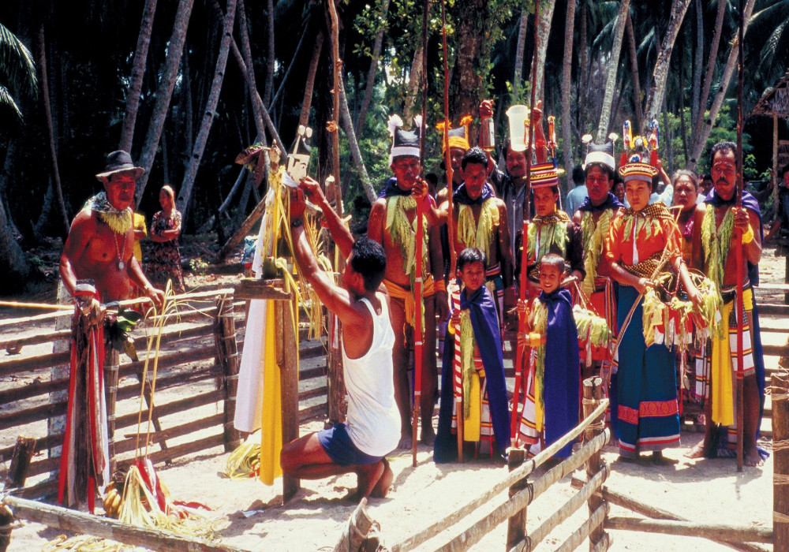
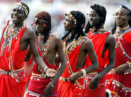

The traditional dress of the Andaman and Nicobar Islands reflects the simple and nature-connected lifestyle of the indigenous tribes as well as the influences of settlers from different parts of India. Given the tropical climate of the region, the attire is generally light and minimal, designed to suit the warm and humid environment.
The indigenous tribes of the Andaman Islands, such as the Great Andamanese, Onge, and Jarwa, wear very simple clothing, often made from natural materials available in their surroundings. These tribes traditionally use leaves, bark, and grass to craft garments, which are functional and provide ease of movement during their daily activities, such as hunting and gathering. The Nicobarese, another indigenous group from the Nicobar Islands, have a slightly more developed sense of attire. The men typically wear loincloths, while women wear skirts made from coconut leaves or tree bark. The Nicobarese also adorn themselves with ornaments made from shells, bones, and other natural materials, which are a part of their traditional attire.


With the influx of settlers from mainland India, the dressing style of the islands has evolved to include a variety of cultural influences. People from Bengal, Tamil Nadu, Kerala, and other parts of India have brought their own traditional clothing styles. As a result, women are often seen wearing sarees, salwar kameez, and skirts, while men wear dhotis, lungis, and shirts. The combination of tribal clothing and mainland influences creates a fascinating blend of traditional and modern attire on the islands.
The modern population of the Andaman and Nicobar Islands, especially in urban areas, also embraces contemporary fashion, similar to the rest of India, with Western-style clothing becoming popular, particularly among the younger generations. Despite modernization, the islands' indigenous tribes continue to preserve their unique cultural identity through their traditional dress.